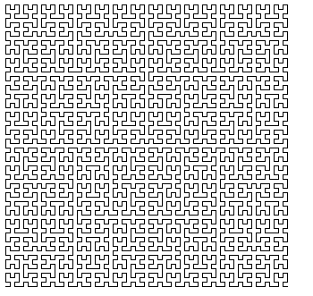

Tema 3: Procedimientos recursivos¶
Ya hemos visto algunos muchos ejemplos de funciones recursivas. Una función es recursiva cuando se llama a si misma. Una vez que uno se acostumbra a su uso, se comprueba que la recursión es una forma mucho más natural que la iteración de expresar un gran número de funciones y procedimientos.
La formulación matemática de la recursión es sencilla de entender, pero su implementación en un lenguaje de programación no lo es tanto. El primer lenguaje de programación que permitió el uso de expresiones recursivas fue el Lisp. En el momento de su creación existía ya el Fortran, que no permitía que una función se llamase a si misma.
Ya hemos visto la utilidad de la recursión en muchos ejemplos para recorrer listas, para filtrarlas, etc. En este tema veremos algunos aspectos negativos de la recursión: su coste espacial y temporal. Veremos que hay soluciones a estos problemas, cambiando el estilo de la recursión y generando procesos iterativos o usando un enfoque automático llamado memoization en el que se guardan los resultados de cada llamada recursiva. Por último, veremos un último ejemplo curioso e interesante de la recursión para realizar figuras fractales con gráficos de tortuga.
Pensando recursivamente¶
Para diseñar procedimientos recursivos no funciona el método de prueba y error. Hay que diseñar la solución recursiva desde el principio. Debemos fijarnos en lo que devuelve la función y debemos preguntarnos cómo sería posible descomponer el problema de forma que podamos lanzar la recursión sobre una versión más sencilla del mismo. Supondremos que la llamada recursiva funciona correctamente y devuelve el resultado correcto. Y después debemos transformar este resultado correcto de la versión más pequeña en el resultado de la solución completa.
Es muy importante escribir y pensar en las funciones de forma declarativa, teniendo en cuenta lo que hacen y no cómo lo hacen.
Debes confiar en que la llamada recursiva va a hacer su trabajo y devolver el resultado correcto, sin preocuparte de cómo lo va a hacer. Después tendrás que utilizar lo que la llamada recursiva ha devuelto para componer la solución definitiva al problema.
Para diseñar un algoritmo recursivo es útil no ponerse a programar directamente, sino reflexionar sobre la solución recursiva con algún ejemplo. El objetivo es obtener una formulación abstracta del caso general de la recursión antes de programarlo. Una vez que encontramos esta formulación, pasarlo a un lenguaje de programación es muy sencillo.
Por último, deberemos reflexionar en el caso base. Debe ser el caso más sencillo que puede recibir como parámetro la recursión. Debe devolver un valor compatible con la definición de la función. Por ejemplo, si la función debe construir una lista, el caso base debe devolver también una lista. Si la función construye una pareja, el caso base también devolverá una pareja. No debemos olvidar que el caso base es también un ejemplo de invocación de la función.
Ya hemos usado todos estos consejos en el tema anterior y en las prácticas realizadas hasta ahora.
Veamos ejemplo más. ¿cómo definimos una lista palíndroma de forma recursiva?. Por ejemplo, las siguientes listas son palíndromas:
1 2 3 4 | {1 2 3 3 2 1} {1 2 1} {1} '() |
Comenzamos con una definición no recursiva:
Una lista es palíndroma cuando es igual a su inversa.
Esta definición no es recursiva porque no llamamos a la recursión con un caso más sencillo.
La definición recursiva del caso general es la siguiente:
Una lista es palíndroma cuando su primer elemento es igual que el último y la lista resultante de quitar el primer y el último elemento también es palíndroma
En el caso base debemos buscar el caso más pequeño no contemplado por la definición anterior. En este caso, una lista de un elemento y una lista vacía también las consideraremos palíndromas.
palindroma(lista) <=> (primer-elemento(lista) == ultimo-elemento(lista)) y palindroma(quitar-primero-ultimo(lista))
palindroma(lista) <=> un-elemento(lista) o vacía(lista)
Podemos escribir la definición en Scheme, usando la función or para
indicar que la lista es palíndroma si sucede una de las tres condiciones:
1 2 3 4 5 | (define (palindroma? lista) (or (null? lista) (null? (cdr lista)) (and (equal? (car lista) (ultimo lista)) (palindroma? (quitar-primero-ultimo lista))))) |
La función auxiliar quitar-primero-ultimo la podemos definir así:
1 2 3 4 5 6 7 8 | (define (quitar-ultimo lista) (if (null? (cdr lista)) '() (cons (car lista) (quitar-ultimo (cdr lista))))) (define (quitar-primero-ultimo lista) (cdr (quitar-ultimo lista))) |
El coste de la recursión¶
Hasta ahora hemos estudiado el diseño de funciones recursivas. Vamos a tratar por primera vez su coste. Veremos que hay casos en los que es prohibitivo utilizar la recursión tal y como la hemos visto. Y veremos también que existen soluciones para esos casos.
La pila de la recursión¶
Vamos a estudiar el comportamiento de la evaluación de una llamada a
una función recursiva. Supongamos la función
mi-length:
1 2 3 4 | (define (mi-length items) (if (null? items) 0 (+ 1 (mi-length (cdr items))))) |
Examinamos cómo se evalúan las llamadas recursivas:
1 2 3 4 5 6 7 8 9 10 | (mi-length '(a b c d)) (+ 1 (mi-length '(b c d))) (+ 1 (+ 1 (mi-length '(c d)))) (+ 1 (+ 1 (+ 1 (mi-length '(d))))) (+ 1 (+ 1 (+ 1 (+ 1 (mi-length '()))))) (+ 1 (+ 1 (+ 1 (+ 1 0)))) (+ 1 (+ 1 (+ 1 1))) (+ 1 (+ 1 2)) (+ 1 3) 4 |
Cada llamada a la recursión deja una función en espera de ser evaluada cuando la recursión devuelva un valor (en el caso anterior las funciones suma). Estas llamadas en espera, junto con sus argumentos, se almacenan en la pila de la recursión.
Cuando la recursión devuelve un valor, los valores se recuperan de la pila, se realiza la llamada y se devuelve el valor a la anterior llamada en espera.
Si la recursión está mal hecha y nunca termina se genera un stack overflow porque la memoria que se almacena en la pila sobrepasa la memoria reservada para el intérprete DrRacket.
Coste espacial de la recursión¶
El coste espacial de un programa es una función que relaciona la memoria consumida por una llamada para resolver un problema con alguna variable que determina el tamaño del problema a resolver.
En el caso de la función mi-length el tamaño del problema viene dado
por la longitud de la lista. El coste espacial de mi-lenght es
O(n), siendo n la longitud de la lista.
El coste depende del número de llamadas a la recursión¶
Veamos con un ejemplo que el coste de las llamadas recursivas puede dispararse. Supongamos la famosa secuencia de Fibonacci: 0,1,1,2,3,5,8,13,...
Formulación matemática de la secuencia de Fibonacci:
1 2 3 | Fibonacci(n) = Fibonacci(n-1) + Fibonacci(n-2) Fibonacci(0) = 0 Fibonacci(1) = 1 |
Formulación recursiva en Scheme:
1 2 3 4 5 | (define (fib n) (cond ((= n 0) 0) ((= n 1) 1) (else (+ (fib (- n 1)) (fib (- n 2)))))) |
Evaluación de una llamada a Fibonacci:

Cada llamada a la recursión produce otras dos llamadas, por lo que el número de llamadas finales es 2^n siendo n el número que se pasa a la función.
El coste espacial y temporal es exponencial, O(2^n). Esto hace
inviable utilizar esta implementación para realizar el cálculo de la
función. Puedes comprobarlo intentando evaluar en el intérprete
(fib 35).
Soluciones al coste de la recursión: procesos iterativos¶
Diferenciamos entre procedimientos y procesos: un procedimiento es un algoritmo y un proceso es la ejecución de ese algoritmo.
Es posible definir procedimientos recursivos que generen procesos iterativos (como los bucles en programación imperativa) en los que no se dejen llamadas recursivas en espera ni se incremente la pila de la recursión. Para ello construimos la recursión de forma que en cada llamada se haga un cálculo parcial y en el caso base se pueda devolver directamente el resultado obtenido.
Este estilo de recursión se denomina recursión por la cola (tail recursion, en inglés).
Se puede realizar una implementación eficiente de la ejecución del proceso, eliminando la pila de la recursión.
Factorial iterativo¶
Empezamos a explicar la recursión por la cola con un ejemplo muy
sencillo: la versión iterativa de la típica función factorial. Le
pondremos de nombre a la función factorial-iter:
1 2 3 4 5 6 7 | (define (factorial n) (fact-iter n n)) (define (fact-iter n result) (if (= n 1) result (fact-iter (- n 1) (* result (- n 1)) ))) |
La función (fact-iter n result) es la que define el proceso
iterativo. Su argumento n es el valor del que hay que calcular el
factorial y el argumento result es un parámetro adicional en el que
se van guardando los resultados intermedios.
En cada llamada recursiva, n se va haciendo cada vez más pequeño y
en result se va acumulando el cálculo del factorial. Al final de la
recursión el factorial debe estar calculado en result y se devuelve.
Veamos la secuencia de llamadas:
1 2 3 4 5 6 | (factorial 4) (factorial-iter 4 4) (factorial-iter 3 4*3=12) (factorial-iter 2 12*2=24) (factorial-iter 1 24*1=24) 24 |
Antes de realizar cada llamada recursiva se realiza el cálculo del
resultado parcial, que se guarda en el parámetro result. Después se
realiza la llamada con el nuevo valor calculado de n y de result.
Al final, cuando n vale 1 se devuelve el valor calculado de
result. Este valor es el resultado completo de la recursión, ya que
no hay que hacer ninguna operación más con él. A diferencia de los
procesos recursivos, en los que se quedan llamadas en espera en la
pila de la recursión, en los procesos iterativos no hay ninguna
llamada en espera. El resultado devuelto por el caso base es
directamente la solución de la recursión, no queda nada por hacer con
este resultado.
Es importante el valor inicial de resultado. La función factorial
se encarga de inicializar este parámetro. En este caso es el mismo
valor del número n a calcular el factorial.
La secuencia de llamadas recursivas acumula en la variable result el
valor del factorial:
1 | 4 * 3 * 2 * 1 = 24
|
Versión iterativa de mi-length¶
Veamos un segundo ejemplo. ¿Cómo sería la versión iterativa de
mi-length, la función que calcula la logitud de una lista?.
Tenemos que añadir un parámetro adicional en el que iremos acumulando el resultado parcial. En este caso, cada vez que llamemos a la recursión eliminado un elemento de la lista, incrementaremos en 1 el valor del resultado. Para que funcione bien este enfoque, debemos inicializar este resultado a 0.
La solución es la siguiente:
1 2 3 4 5 6 7 | (define (mi-length lista) (mi-length-iter lista 0)) (define (mi-length-iter lista result) (if (null? lista) result (mi-length-iter (cdr lista) (+ result 1)))) |
Fijaros que, al igual que en la versión iterativa de factorial, no hay ninguna llamada a ningúna función que recoja el resultado de la llamada recursiva y haga algo con él. Directamente el resultado de la llamada recursiva es el resultado final de la recursión.
Función suma-lista usando recursión por la cola¶
Veamos otro ejemplo. Supongamos que queremos calcular usando recursión por la cola la suma de los números de una lista.
Deberíamos añadir un parámetro adicional en el que vamos acumulando esa suma. Inicializaremos a 0 ese parámetro e iremos en cada llamada recursiva acumulando el primer elemento de la lista:
1 2 3 4 5 6 7 | (define (suma-lista lista) (suma-lista-iter lista 0)) (define (suma-lista-iter lista result) (if (null? lista) result (suma-lista-iter (cdr lista) (+ result (car lista))))) |
Procesos iterativos¶
Un resumen de las características de los procesos iterativos resultantes de hacer una recursión por la cola:
- La recursión resultante es menos elegante.
- Se necesita una parámetro adicional en el que se van acumulando los resultados parciales.
- La última llamada a la recursión devuelve el valor acumulado.
- El proceso resultante de la recursión es iterativo en el sentido de que no deja llamadas en espera ni incurre en coste espacial.
Fibonacci iterativo¶
Cualquier programa recursivo se puede transformar en otro que genera un proceso iterativo.
En general, las versiones iterativas son menos intuitivas y más difíciles de entender y depurar.
Veamos, por ejemplo, la formulación iterativa de Fibonacci:
1 2 3 4 5 6 7 | (define (fib n) (fib-iter 1 0 n)) (define (fib-iter a b count) (if (= count 0) b (fib-iter (+ a b) a (- count 1)))) |
La secuencia de llamadas recursivas sería la siguiente:
1 2 3 4 5 6 7 8 9 | (fib 6) (fib-iter 1 0 6) (fib-iter 1+0=1 1 5) (fib-iter 1+1=2 1 4) (fib-iter 2+1=3 2 3) (fib-iter 3+2=5 3 2) (fib-iter 5+3=8 5 1) (fib-iter 8+5=13 8 0) 8 |
En la llamada recursiva n, el parámetro a guarda el valor de
fibonacci n+1 y el parámetro b guarda el valor de fibonacci n,
que es el que se devuelve. Conseguimos n llamadas inicializando
count a n y decrementando el parámetro en 1 cada vez.
Triángulo de Pascal¶
El triángulo de Pascal es el siguiente triángulo de números.
1 2 3 4 5 6 7 8 9 | 1 1 1 1 2 1 1 3 3 1 1 4 6 4 1 1 5 10 10 5 1 1 6 15 20 15 6 1 1 7 21 35 35 21 7 1 ... |
Si numeramos las filas y columnas empezando a contar por 0, la expresión general del valor en una fila y columna determinada se puede obtener con la siguiente definición recursiva:
1 2 3 | Pascal (n, 0) = 1 Pascal (n, n) = 1 Pascal (fila, columna) = Pascal (fila-1,columna-1) + Pascal (fila-1, columna) |
La función sólo está definida para valores de columna menores o
iguales que fila.
En Scheme es fácil escribir una función recursiva que implemente la definición anterior:
1 2 3 4 5 6 7 8 9 10 11 | (define (pascal fila col) (cond ((= col 0) 1) ((= col fila) 1) (else (+ (pascal (- fila 1) (- col 1)) (pascal (- fila 1) col) )))) (pascal 4 2) ; ⇒ 6 (pascal 8 4) ; ⇒ 70 (pascal 27 13) ; ⇒ 20058300 |
Hay que llamar a la función con un valor de col menor o igual que
fila. En el caso en que se pase un valor col mayor que fila la
recursión no termina y se entra en un bucle infinito.
La función tiene una formulación sencilla y funciona
correctamente. Sin embargo, el coste de esta recursión es también
exponencial, igual que pasaba en el caso de la secuencia de
fibonacci. Por ejemplo, la última expresión (pascal 27 13) tarda un
buen rato en devolver el resultado. Sería imposible calcular el valor
de números de Pascal un poco más grandes, como (pascal 40 20).
Veamos cómo se puede conseguir una versión iterativa.
La idea es definir una función iterativa pascal-fila a la que le
pasamos el número de fila n y nos devuelve la lista de n+1 números que
constituyen la fila n del triángulo de Pascal:
1 2 3 4 5 6 | fila 0 = {1} fila 1 = {1 1} fila 2 = {1 2 1} fila 3 = {1 3 3 1} fila 4 = {1 4 6 4 1} ... |
Esta función necesitará un parámetro adicional (lista-fila) que se
inicializa con la lista {1} y en el que se va guardando cada fila
sucesiva. Esta fila va creciendo hasta que llegamos a la fila que
tenemos que devolver. Hay que hacer la iteración n veces, por lo que
vamos decrementando el parámetro n hasta que se llega a 0.
Para implementar esta función usamos otra llamada (pascal-sig-fila
lista-fila) que recibe una fila del triángulo y devuelve la
siguiente.
Por ejemplo:
1 2 | (pascal-sig-fila '(1 3 3 1)) ; ⇒ {1 4 6 4 1} |
Esta función la implementamos con una función recursiva auxiliar (esta
es recursiva pura) llamada (pascal-suma-dos-a-dos lista-fila) que es
la que se encarga de realizar el cálculo de la nueva fila.
El código completo es el siguiente:
1 2 3 4 5 6 7 8 9 10 11 12 13 14 15 16 17 18 | (define (pascal fila col) (list-ref (pascal-fila '(1) fila) col)) (define (pascal-fila lista-fila n) (if (= 0 n) lista-fila (pascal-fila (pascal-sig-fila lista-fila) (- n 1)))) (define (pascal-sig-fila lista-fila) (append '(1) (pascal-suma-dos-a-dos lista-fila) '(1))) (define (pascal-suma-dos-a-dos lista-fila) (if (null? (cdr lista-fila)) '() (cons (+ (car lista-fila) (car (cdr lista-fila))) (pascal-suma-dos-a-dos (cdr lista-fila))))) |
Con esta implementación ya no se tiene un coste exponencial y se puede calcular el valor de números como Pascal(40, 20):
1 2 | (pascal 40 20) ; ⇒ 137846528820 |
Soluciones al coste de la recursión: memoization¶
Una alternativa que mantiene la elegancia de los procesos recursivos y
la eficiencia de los iterativos es la
memoization. Si miramos la
traza de (fibonacci 4) podemos ver que el coste está producido por
la repetición de llamadas; por ejemplo (fibonacci 3) se evalúa 2
veces.
En programación funcional la llamada a (fibonacci 3) siempre va a
devolver el mismo valor.
La idea de la memoization es guardar el valor devuelto por la cada llamada en alguna estructura (una lista de asociación, por ejemplo) y no volver a realizar la llamada a la recursión las siguientes veces.
Fibonacci con memoization¶
Para implementar la memoization necesitamos dos métodos imperativos
put y get que implementan un diccionario clave-valor.
- La función
(put key value lista)asocia un valor a una clave, la guarda en la lista (con mutación) y devuelve el valor. - La función
(get key lista)devuelve el valor de la lista asociado a una clave. En el caso en que no exista ningún valor se devuelve la lista vacía.
Inicialmente la lista debe tener un símbolo cualquiera al comienzo.
Ejemplos:
1 2 3 4 | (define mi-lista (list 'lista-asoc)) (put 1 10 mi-lista) ; ⇒ 10 (get 1 mi-lista) ; ⇒ 10 (get 2 mi-lista) ; ⇒ '() |
Estos métodos son imperativos porque modifican (mutan) los datos de la lista de asociación que pasamos como parámetro. Para implementarlos tenemos que salirnos del paradigma funcional, importando una librería de Scheme que permite mutar las parejas.
No es importante la implementación, la dejamos aquí como referencia y para poder probar la memoization.
1 2 3 4 5 6 7 8 9 10 11 12 13 14 15 16 17 18 19 20 21 22 23 24 | (import (rnrs) (rnrs mutable-pairs)) (define lista (list 'lista-asoc)) (define (buscar key lista) (cond ((null? lista) #f) ((equal? (caar lista) key) (car lista)) (else (buscar key (cdr lista))))) (define (get key lista) (define record (buscar key (cdr lista))) (if (not record) '() (cdr record))) (define (put key value lista) (define record (buscar key (cdr lista))) (if (not record) (set-cdr! lista (cons (cons key value) (cdr lista))) (set-cdr! record value)) value) |
La función fib-memo realiza el cálculo de la serie de Fibonacci
utilizando exactamente la misma definición recursiva original, pero
añadiendo la técnica de memoization: lo primero que hacemos para
calcular el número de fibonacci n, antes de llamar a la recursión,
es comprobar si está ya guardado en la lista de asociación. En el caso
en que esté, lo devolvemos. Sólo cuando el número no está calculado
llamamos a la recursión para calcularlo.
La implementación se muestra a continuación. Vemos que para devolver
el número de fibonacci n se comprueba si ya está guardado en la
lista. Sólo en el caso en que no esté guardado se llama a la recursión
para calcularlo y guardarlo. La función put que guarda el nuevo
valor calculado también lo devuelve.
1 2 3 4 5 6 7 | (define (fib-memo n lista) (cond ((= n 0) 0) ((= n 1) 1) ((not (null? (get n lista))) (get n lista)) (else (put n (+ (fib-memo (- n 1) lista) (fib-memo (- n 2) lista)) lista)))) |
Podemos comprobar la diferencia de tiempos de ejecución entre esta versión y la anterior. El coste de la función memoizada es O(n). Frente al coste O(2^n) de la versión inicial que la hacía imposible de utilizar.
1 2 | (fib-memo 200 lista) ⇒ 280571172992510140037611932413038677189525 |
Recursión y gráficos de tortuga¶
Vamos a terminar el apartado sobre procedimientos recursivos con un
último ejemplo algo distinto de los vistos hasta ahora. Usaremos la
recursión para dibujar figuras fractales usando los denominados
gráficos de tortuga. Para dibujar las figuras tendremos que utilizar
un estilo de programación no funcional, dibujando los distintos trazos
de las figuras con pasos de ejecución secuenciales. Para ello usaremos
una primitiva imperativa de Scheme: la forma especial begin que
permite realizar un grupo de pasos de ejecución de forma secuencial.
Ten cuidado con la forma especial begin, es una forma especial
imperativa. No debes usarla en la implementación de ninguna función
cuando estemos usando el paradigma funcional.
Gráficos de tortuga en Racket¶
Se pueden utilizar los
gráficos de tortuga en
Racket cargando la librería (graphics turtles):
1 2 3 | #lang r6rs (import (rnrs) (graphics turtles)) |
Los comandos más importantes de esta librería son:
(turtles #t): abre una ventana y coloca la tortuga en el centro, mirando hacia el eje X (derecha)(clear): borra la ventana y coloca la tortuga en el centro(draw d): avanza la tortuga dibujando d píxeles(move d): mueve la tortuga d píxeles hacia adelante (sin dibujar)(turn g): gira la tortuga g grados (positivos: en el sentido contrario a las agujas del reloj)
Prueba a realizar algunas figuras con los comandos de tortuga, antes de escribir el algoritmo en Scheme del triángulo de Sierpinski.
Por ejemplo, podemos definir una función que dibuja un triángulo
rectángulo con catetos de longitud x:
1 2 3 4 5 6 7 8 9 10 11 12 13 | (define (hipot x) (* x (sqrt 2))) (define (triangulo-rectangulo x) (begin (draw x) (turn 90) (draw x) (turn 135) (draw (hipot x)) (turn 135))) (triangulo-rectangulo 100) |
La función (hipot x) devuelve la longitud de la hipotenusa de un
triángulo rectángulo con dos lados de longitud x. O sea, la
expresión:

Como puedes comprobar, el código es imperativo. La forma especial
begin permite realizar una serie de pasos de ejecución que modifican
el estado (posición y orientación) de la tortuga y dibujan los
trazos de la figura.
El siguiente código es una variante del anterior que dibuja un
triángulo rectángulo de base w y lados w/2. Va a ser la figura
base del triángulo de Sierpinski.
1 2 3 4 5 6 7 8 | (define (triangle w) (begin (draw w) (turn 135) (draw (hipot (/ w 2))) (turn 90) (draw (hipot (/ w 2))) (turn 135))) |
Triángulo de Sierpinski¶

Triángulo de Sierpinski
- ¿Ves alguna recursión en la figura?
- ¿Cuál podría ser el parámetro de la función que la dibujara?
- ¿Se te ocurre un algoritmo recursivo que la dibuje?
La figura es autosimilar (una característica de las figuras fractales). Una parte de la figura es idéntica a la figura total, pero reducida de escala. Esto nos da una pista de que es posible dibujar la figura con un algoritmo recursivo.
Para intentar encontrar una forma de enfocar el problema, vamos a pensarlo de la siguiente forma: supongamos que tenemos un triángulo de Sierpinski de anchura h y altura h/2 con su esquina inferior izquierda en la posición 0,0. ¿Cómo podríamos construir el siguiente triángulo de Sierpinski?.
Podríamos construir un triángulo de Sierpinski más grande dibujando 3 veces el mismo triángulo, pero en distintas posiciones:
- Triángulo 1 en la posición (0,0)
- Triángulo 2 en la posición (h/2,h/2)
- Triángulo 3 en la posición (h,0)
El algoritmo recursivo se basa en la misma idea, pero hacia atrás. Debemos intentar dibujar un triángulo de altura h situado en la posición x, y basándonos en 3 llamadas recursivas a triángulos más pequeños. En el caso base, cuando h sea menor que un umbral, dibujaremos un triángulo de lado h y altura h/2:
O sea, que para dibujar un triángulo de Sierpinski de base h y altura h/2 debemos:
- Dibujar tres triángulos de Sierpinsky de la mitad del tamaño del original (h/2) situadas en las posiciones (x,y), (x+h/4, y+h/4) y (x+h/2,y)
- En el caso base de la recursión, en el que h es menor que una constante, se dibuja un triángulo de base h y altura h/2.
Una versión del algoritmo en pseudocódigo:
1 2 3 4 5 6 | Sierpinsky (x, y, h): if (h > MIN) { Sierpinsky (x, y, h/2) Sierpinsky (x+h/4, y+h/4, h/2) Sierpinsky (x+h/2, y, h/2) } else dibujaTriangulo (x, y, h) |
Sierpinski en Racket¶
La siguiente es una versión imperativa del algoritmo que dibuja el
triángulo de Sierpinski. No es funcional porque se realizan pasos de
ejecución, usando la forma especial begin o múltiples instrucciones
en una misma función (por ejemplo la función triangle).
1 2 3 4 5 6 7 8 9 10 11 12 13 14 15 16 17 18 19 20 21 22 23 24 25 26 27 28 | #lang r6rs (import (rnrs) (graphics turtles)) (turtles #t) (define (hipot x) (* x (sqrt 2))) (define (triangle w) (begin (draw w) (turn 135) (draw (hipot (/ w 2))) (turn 90) (draw (hipot (/ w 2))) (turn 135))) (define (sierpinski w) (if (> w 20) (begin (sierpinski (/ w 2)) (move (/ w 4)) (turn 90) (move (/ w 4)) (turn -90) (sierpinski (/ w 2)) (turn -90) (move (/ w 4)) (turn 90) (move (/ w 4)) (sierpinski (/ w 2)) (turn 180) (move (/ w 2)) (turn -180)) ;; volvemos a la posición original (triangle w))) |
La llamada a
1 | (sierpinski 40) |
produce la siguiente figura:

La llamada a
1 | (sierpinski 700) |
Produce la figura que vimos al principio del apartado:
Para ocupar la venta completa debemos desplazar la tortuga hacia atrás
antes de invocar a sierpinski:
1 2 3 | (clear) (move -350) (sierpinski 700) |
Recursión mutua¶
En la recursión mutua definimos una función en base a una segunda, que a su vez se define en base a la primera.
También debe haber un caso base que termine la recursión
Por ejemplo:
- x es par si x-1 es impar
- x es impar si x-1 es par
- 0 es par
Programas en Scheme:
1 2 3 4 5 6 7 8 9 | (define (par? x) (if (= 0 x) #t (impar? (- x 1)))) (define (impar? x) (if (= 0 x) #f (par? (- x 1)))) |
Ejemplo avanzado: curvas de Hilbert¶
La curva de Hilbert es una curva fractal que tiene la propiedad de rellenar completamente el espacio
Su dibujo tiene una formulación recursiva:

La curva H3 se puede construir a partir de la curva H2. El algoritmo recursivo se formula dibujando la curva i-ésima a partir de la curva i-1.
Para dibujar una curva de Hilbert de orden i a la derecha de la tortuga:
1 2 3 4 5 6 7 8 9 10 11 | 1. Gira la tortuga -90 2. Dibuja una curva de orden i-1 a la izquierda 3. Avanza long dibujando 4. Gira 90 5. Dibuja una curva de orden i-1 a la derecha 6. Avanza long dibujando 7. Dibuja una curva de orden i-1 a la derecha 8. Gira 90 9. Avanza long dibujando 10. Dibuja una curva de orden i-1 a la izquierda 11. Gira -90 |
El algoritmo para dibujar a la izquierda es simétrico.
Como en la curva de Sierpinsky, utilizamos la librería
graphics/turtles, que permite usar la tortuga de Logo con los
comandos de Logo draw y turn. Definimos dos funciones simétricas,
la función (h-der i long) que dibuja una curva de Hilbert de orden
i con una longitud de trazo long a la derecha de la tortuga y la
función (h-izq i w) que dibuja una curva de Hilbert de orden i con
una longitud de trazo long a la izquierda de la tortuga.
El algoritmo en Scheme:
1 2 3 4 5 6 7 8 9 10 11 12 13 14 15 16 17 18 19 20 21 22 23 24 25 26 27 28 29 30 31 32 33 | #lang r6rs (import (rnrs) (graphics turtles)) (define (h-der i long) (if (> i 0) (begin (turn -90) (h-izq (- i 1) long) (draw long) (turn 90) (h-der (- i 1) long) (draw long) (h-der (- i 1) long) (turn 90) (draw long) (h-izq (- i 1) long) (turn -90)))) (define (h-izq i long) (if (> i 0) (begin (turn 90) (h-der (- i 1) long) (draw long) (turn -90) (h-izq (- i 1) long) (draw long) (h-izq (- i 1) long) (turn -90) (draw long) (h-der (- i 1) long) (turn 90)))) |
Podemos probarlo con distintos parámetros de grado de curva y longitud de trazo.
Curva de Hilbert de nivel 3 con trazo de longitud 20:
1 2 3 4 5 6 | (clear) (move -350) (turn -90) (move 350) (turn 90) (h-izq 3 20) |
Curva de Hilbert de nivel 6 con trazo de longitud 10:
1 2 3 4 5 6 | (clear) (move -350) (turn -90) (move 350) (turn 90) (h-izq 6 10) |
Curva de Hilbert de nivel 7 con trazo de longitud 5:
1 2 3 4 5 6 | (clear) (move -350) (turn -90) (move 350) (turn 90) (h-izq 7 5) |

Bibliografía - SICP¶
En este tema explicamos conceptos de los siguientes capítulos del libro Structure and Intepretation of Computer Programs:
- 1.2 - Procedures and the Processes They Generate
- 1.2.1 - Linear Recursion and Iteration
- 1.2.2 - Tree Recursion
Lenguajes y Paradigmas de Programación, curso 2018-19
© Departamento Ciencia de la Computación e Inteligencia Artificial, Universidad de Alicante
Domingo Gallardo, Cristina Pomares, Antonio Botía, Francisco Martínez